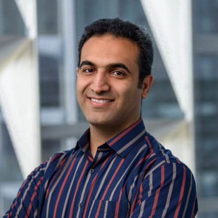

arXiv '26
Senior ML Research Engineer · Kempner Institute, Harvard
I build the systems that train frontier models — scaling deep-learning and LLM workloads across multi-node GPU clusters, on-premises and in the cloud.
Ph.D. in Computer Science · high-performance & distributed computing
also published as Abbas Mazloumi

// about — the short version
I'm a Senior ML Research Engineer on the Research & Engineering team at Harvard's Kempner Institute for the Study of Natural and Artificial Intelligence. I build the frameworks and tooling that let researchers train and serve deep-learning and large-language-model workloads reliably and reproducibly across the institute's GPU clusters — much of it open source. If the faculty drive the science, our team makes the machine faster, more efficient, and more reliable.
Before Harvard I taught computer science as a lecturer at UC Riverside and San Diego State, and worked on the Graph AI team at Katana Graph. I earned my Ph.D. at UC Riverside with Prof. Rajiv Gupta (RIPLE group / GRASP projects), building scalable high-performance systems for distributed graph analytics — plus master's degrees in Computer Science (UCR) and Computer Architecture (University of Tehran).
// systems — what I build with the R&E team
Much of my work at the Kempner Institute ships as open source — the frameworks researchers train on, and the tools that keep large jobs healthy on the cluster.
A PyTorch-native framework for fault-tolerant distributed training of foundation models on AI clusters. Train the same architecture from 125M to 70B parameters by swapping a config — FSDP2, tensor, expert, and pipeline parallelism, FP8, and Mixture-of-Experts, all composable. Built for long jobs on shared SLURM clusters (async checkpointing, auto-resume, NCCL health monitoring), with activation-extraction hooks for mechanistic interpretability and NeuroAI, plus vision-language training over images and video.
Training and reproducible-experiment infrastructure for the institute's vision-language research — SLURM launch, wandb-frozen reproducibility, and shared environment caching for repeatable runs.
Details ↗The institute's public HPC handbook — getting started on the Kempner AI cluster, SLURM, GPU computing, scaling, and performance monitoring on one of the fastest academic clusters in the world.
Read it ↗// focus — what I work on
Scaling deep-learning and LLM workloads across many GPUs — throughput, parallelism, and memory.
Batched and evolving iterative graph queries evaluated at cluster scale.
Extracting performance from heterogeneous, on-prem and cloud clusters.
CUDA, memory systems, and the hardware beneath the frameworks.
Interconnection networks and fast data delivery for many-core processors.
// publications — selected & recent
// experience — the path
Kempner Institute · Harvard University
Research & Engineering team — enabling large-scale training and inference on the institute's GPU clusters.
UC Riverside · San Diego State University
Taught programming, operating systems, and object-oriented design.
Katana Graph
Production distributed graph systems for large-scale analytics.
UC Riverside · RIPLE / GRASP (advisor: Rajiv Gupta)
Distributed evaluation of batches of iterative graph queries. HiPC'20 Best Paper.
University of Tehran
Hybrid packet/circuit-switched networks-on-chip for many-core processors.
// talks — teaching & workshops
Instructor · NeuroAI Symposium, Harvard University
Certified ambassador delivering DLI curricula
Co-instructor · Kempner Institute, Harvard University
Let's connect
Grab 30 minutes on my calendar. I'm always glad to talk through an idea, a project, or just meet someone new — pick a time and you'll get a calendar invite with a meeting link.
Opens my booking page — pick any open slot.